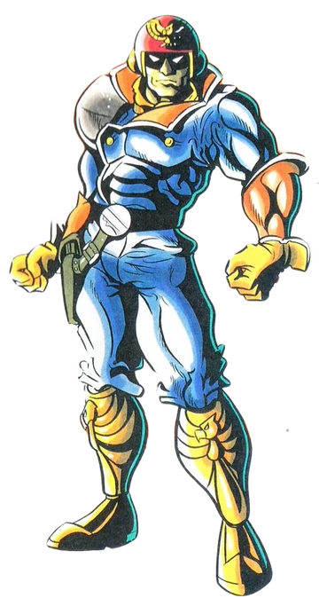

F-Zero est une série de jeux vidéo de course futuriste développée par Nintendo. Le premier jeu, sorti en 1990, met en scène des courses de vaisseaux spatiaux à grande vitesse. Ces jeux se déroulent dans un univers futuriste et offrent des pistes complexes avec des obstacles, des virages serrés et une action rapide. La série est connue pour son gameplay intense et sa difficulté élevée, ainsi que pour ses personnages charismatiques. Elle a connu plusieurs titres sur différentes consoles Nintendo.
Captain Falcon est un personnage emblématique de la série de jeux vidéo F-Zero de Nintendo. Il est à la fois pilote de course et un combattant dans la série Super Smash Bros. Dans l'univers de F-Zero, il est souvent représenté comme un pilote mystérieux et charismatique, conduisant le célèbre vaisseau Blue Falcon.
Hors des courses, dans la série Super Smash Bros, Captain Falcon est un personnage puissant, utilisant des mouvements rapides et des attaques basées sur des techniques de combat rapproché. Il est souvent reconnu pour sa célèbre attaque spéciale, le Falcon Punch, une attaque puissante qui est devenue emblématique parmi les fans de jeux vidéo. Bien qu'il ait commencé sa carrière comme un personnage principal de la série F-Zero, Captain Falcon est également devenu très populaire grâce à son inclusion dans Super Smash Bros.